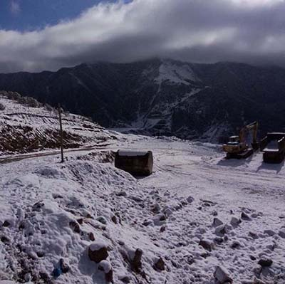

成功案例

冕宁隧道项目
冕宁隧道项目位于凉山州冕宁县牦牛坪，用途为矿山排洪，隧洞全长1800米，于2013年12月正式贯通，2014年6月混凝土浇筑完毕。
府河清淤项目
成都府河清淤项目与2014年10月动工，历时三个星期，共计清理淤泥20000立方米。
德昌水利项目
德昌水利项目位于凉山州德昌县，主要工程为修建引水渠的前期勘测工作，采用摄影测量方式，测区面积50平方公里。

都香高速项目
都香高速项目位于昭通市鲁甸县，主要工程为昭通段高速公路的前期勘测工作，采用摄影测量方式，测区面积70平方公里。